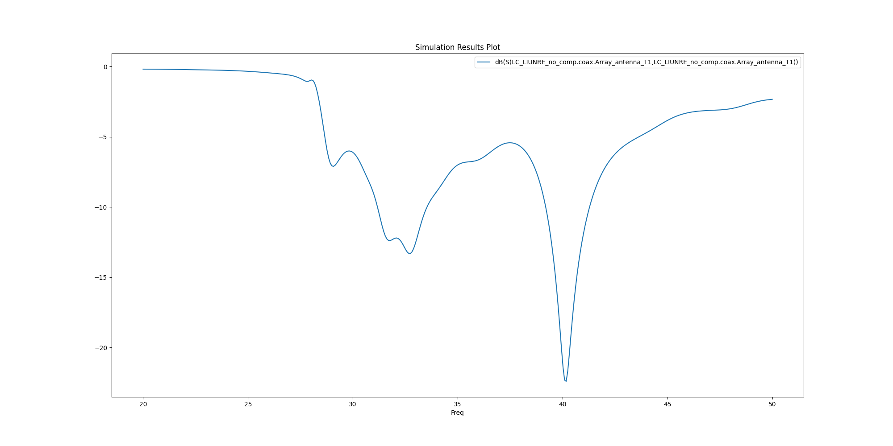

Note
Go to the end to download the full example code
EDB: Layout Components#
This example shows how you can use EDB to create a layout component parametrics and use it in HFSS 3D.
Perform required imports#
Perform required imports, which includes importing the Hfss3dlayout object
and initializing it on version 2023 R2.
import tempfile
import pyaedt
import os
Set non-graphical mode#
Set non-graphical mode. The default is False.
non_graphical = False
Creating data classes#
Data classes are useful to do calculations and store variables. We create 3 Data classes for Patch, Line and Array
class Patch:
def __init__(self, width=0.0, height=0.0, position=0.0):
self.width = width
self.height = height
self.position = position
@property
def points(self):
return [
[self.position, "-{}/2".format(self.height)],
["{} + {}".format(self.position, self.width), "-{}/2".format(self.height)],
["{} + {}".format(self.position, self.width), "{}/2".format(self.height)],
[self.position, "{}/2".format(self.height)],
]
class Line:
def __init__(self, length=0.0, width=0.0, position=0.0):
self.length = length
self.width = width
self.position = position
@property
def points(self):
return [
[self.position, "-{}/2".format(self.width)],
["{} + {}".format(self.position, self.length), "-{}/2".format(self.width)],
["{} + {}".format(self.position, self.length), "{}/2".format(self.width)],
[self.position, "{}/2".format(self.width)],
]
class LinearArray:
def __init__(self, nb_patch=1, array_length=10e-3, array_width=5e-3):
self.nbpatch = nb_patch
self.length = array_length
self.width = array_width
@property
def points(self):
return [
[-1e-3, "-{}/2-1e-3".format(self.width)],
["{}+1e-3".format(self.length), "-{}/2-1e-3".format(self.width)],
["{}+1e-3".format(self.length), "{}/2+1e-3".format(self.width)],
[-1e-3, "{}/2+1e-3".format(self.width)],
]
Launch EDB#
PyAEDT.Edb allows to open existing Edb project or create a new empty project.
tmpfold = tempfile.gettempdir()
aedb_path = os.path.join(tmpfold, pyaedt.generate_unique_name("pcb") + ".aedb")
print(aedb_path)
edb = pyaedt.Edb(edbpath=aedb_path, edbversion="2023.2")
D:\Temp\pcb_3UAA7G.aedb
Add stackup layers#
Add the stackup layers.
edb.stackup.add_layer("Virt_GND")
edb.stackup.add_layer("Gap", "Virt_GND", layer_type="dielectric", thickness="0.05mm", material="Air")
edb.stackup.add_layer("GND", "Gap")
edb.stackup.add_layer("Substrat", "GND", layer_type="dielectric", thickness="0.5mm", material="Duroid (tm)")
edb.stackup.add_layer("TOP", "Substrat")
<pyaedt.edb_core.edb_data.layer_data.StackupLayerEdbClass object at 0x000001A9FE0E3520>
Create linear array#
Create the first patch of the linear array.
edb["w1"] = 1.4e-3
edb["h1"] = 1.2e-3
edb["initial_position"] = 0.0
edb["l1"] = 2.4e-3
edb["trace_w"] = 0.3e-3
first_patch = Patch(width="w1", height="h1", position="initial_position")
edb.modeler.create_polygon(first_patch.points, "TOP", net_name="Array_antenna")
# First line
first_line = Line(length="l1", width="trace_w", position=first_patch.width)
edb.modeler.create_polygon(first_line.points, "TOP", net_name="Array_antenna")
<pyaedt.edb_core.edb_data.primitives_data.EdbPolygon object at 0x000001A9FE0E2080>
Patch linear array#
Patch the linear array.
edb["w2"] = 2.29e-3
edb["h2"] = 3.3e-3
edb["l2"] = 1.9e-3
edb["trace_w2"] = 0.2e-3
patch = Patch(width="w2", height="h2")
line = Line(length="l2", width="trace_w2")
linear_array = LinearArray(nb_patch=8, array_width=patch.height)
current_patch = 1
current_position = "{} + {}".format(first_line.position, first_line.length)
while current_patch <= linear_array.nbpatch:
patch.position = current_position
edb.modeler.create_polygon(patch.points, "TOP", net_name="Array_antenna")
current_position = "{} + {}".format(current_position, patch.width)
if current_patch < linear_array.nbpatch:
line.position = current_position
edb.modeler.create_polygon(line.points, "TOP", net_name="Array_antenna")
current_position = "{} + {}".format(current_position, line.length)
current_patch += 1
linear_array.length = current_position
Add ground#
Add a ground.
edb.modeler.create_polygon(linear_array.points, "GND", net_name="GND")
<pyaedt.edb_core.edb_data.primitives_data.EdbPolygon object at 0x000001A9FE0E3910>
Add connector pin#
Add a central connector pin.
edb.padstacks.create(padstackname="Connector_pin", holediam="100um", paddiam="0", antipaddiam="200um")
con_pin = edb.padstacks.place(
["{}/4.0".format(first_patch.width), 0],
"Connector_pin",
net_name="Array_antenna",
fromlayer="TOP",
tolayer="GND",
via_name="coax",
)
Add connector ground#
Add a connector ground.
edb.modeler.create_polygon(first_patch.points, "Virt_GND", net_name="GND")
edb.padstacks.create("gnd_via", "100um", "0", "0")
edb["via_spacing"] = 0.2e-3
con_ref1 = edb.padstacks.place(
["{} + {}".format(first_patch.points[0][0], "via_spacing"), "{} + {}".format(first_patch.points[0][1], "via_spacing")],
"gnd_via",
fromlayer="GND",
tolayer="Virt_GND",
net_name="GND",
)
con_ref2 = edb.padstacks.place(
["{} + {}".format(first_patch.points[1][0], "-via_spacing"), "{} + {}".format(first_patch.points[1][1], "via_spacing")],
"gnd_via",
fromlayer="GND",
tolayer="Virt_GND",
net_name="GND",
)
con_ref3 = edb.padstacks.place(
["{} + {}".format(first_patch.points[2][0], "-via_spacing"), "{} + {}".format(first_patch.points[2][1], "-via_spacing")],
"gnd_via",
fromlayer="GND",
tolayer="Virt_GND",
net_name="GND",
)
con_ref4 = edb.padstacks.place(
["{} + {}".format(first_patch.points[3][0], "via_spacing"), "{} + {}".format(first_patch.points[3][1], "-via_spacing")],
"gnd_via",
fromlayer="GND",
tolayer="Virt_GND",
net_name="GND",
)
Add excitation port#
Add an excitation port.
edb.padstacks.set_solderball(con_pin, "Virt_GND", isTopPlaced=False, ballDiam=0.1e-3)
port_name = edb.padstacks.create_coax_port(con_pin)
Plot geometry#
Plot the geometry.
edb.nets.plot()
Save and close Edb instance prior to opening it in Electronics Desktop.#
Save EDB.
edb.save_edb()
edb.close_edb()
print("EDB saved correctly to {}. You can import in AEDT.".format(aedb_path))
EDB saved correctly to D:\Temp\pcb_3UAA7G.aedb. You can import in AEDT.
Launch HFSS 3D#
Launch HFSS 3D.
h3d = pyaedt.Hfss(specified_version="2023.2", new_desktop_session=True, close_on_exit=True, solution_type="Terminal")
Initializing new desktop!
Add the layout component#
Hfss allows user to add Layout components (aedb) or 3D Components into a 3D Design and benefit of different functionalities like parametrization, mesh fusion and others.
component = h3d.modeler.insert_layout_component(aedb_path, parameter_mapping=True)
Edit Parameters#
If a layout component is parametric, parameters can be exposed and changed in HFSS
Boundaries#
To run the simulation we need an airbox to which apply radiation boundaries. We don’t need to create ports because are embedded in layout component.
h3d.modeler.fit_all()
h3d.modeler.create_air_region(130,400,1000, 130,400,300)
h3d.assign_radiation_boundary_to_objects("Region")
<pyaedt.modules.Boundary.BoundaryObject object at 0x000001A9FF72AB60>
Create setup and sweeps#
Getters and setters facilitate the settings on the nested property dictionary.
setup.props['Frequency']="20GHz"
You can now use the simpler approach that follows.
setup = h3d.create_setup()
setup.props['Frequency']="20GHz"
setup.props['MaximumPasses'] = 2
sweep1 = setup.add_sweep()
sweep1.props["RangeStart"]="20GHz"
sweep1.props["RangeEnd"]="50GHz"
sweep1.update()
True
Solve setup and create report#
Solve the project and create a report.
h3d.analyze()
True
Plot results outside AEDT#
Plot results using Matplotlib.
<Figure size 2000x1000 with 1 Axes>
Plot Far Fields in AEDT#
Plot Radiation patterns in AEDT.
variations = {}
variations["Freq"] = ["20GHz"]
variations["Theta"] = ["All"]
variations["Phi"] = ["All"]
h3d.insert_infinite_sphere( name="3D")
new_report = h3d.post.reports_by_category.far_field("db(RealizedGainTotal)", h3d.nominal_adaptive, "3D")
new_report.variations = variations
new_report.primary_sweep = "Theta"
new_report.create("Realized2D")
True
Plot Far Fields in AEDT#
Plot Radiation patterns in AEDT.
new_report.report_type = "3D Polar Plot"
new_report.secondary_sweep = "Phi"
new_report.create("Realized3D")
True
Plot Far Fields outside AEDT#
Plot Radiation patterns outside AEDT.
solutions_custom = new_report.get_solution_data()
solutions_custom.plot_3d()
<Figure size 2000x1000 with 1 Axes>
Plot E Field on nets and layers#
Plot E Field on nets and layers in AEDT.
h3d.post.create_fieldplot_layers_nets(
[["TOP","Array_antenna"]],
"Mag_E",
intrinsics={"Freq":"20GHz", "Phase": "0deg"},
plot_name="E_Layers",
)
<pyaedt.modules.solutions.FieldPlot object at 0x000001A9FE0A7E80>
Close AEDT#
After the simulation completes, you can close AEDT or release it using the
pyaedt.Desktop.release_desktop() method.
All methods provide for saving the project before closing AEDT.
h3d.save_project(os.path.join(tmpfold, "test_layout.aedt"))
h3d.release_desktop()
True
Total running time of the script: (3 minutes 15.773 seconds)